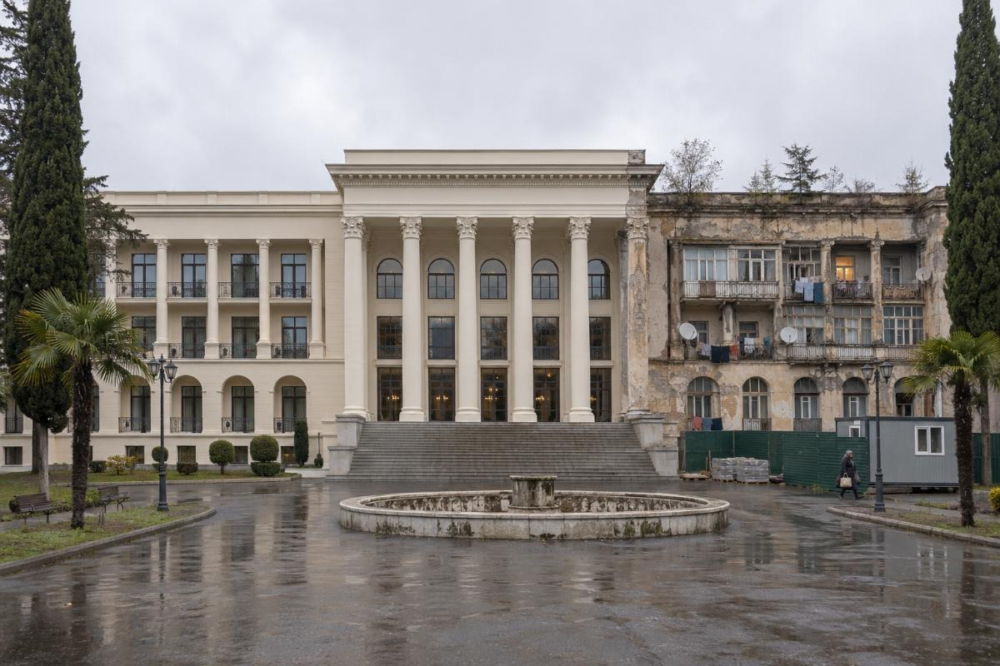

Задвижки

2 февраля
Ладо проснулся в бытовке без будильника, в начале седьмого, и долго лежал на раскладушке, слушая. Обогреватель он включил вечером впервые с четверга, и в синем контейнере было тепло, пахло нагретой пылью и мокрой ватой его куртки, которая опять сохла на радиаторе. За тонкой стенкой шёл дождь, ровный, без ветра. Корпус «Сатаплии» стоял в двадцати шагах, тёмный, пустой: последние январские гости уехали в понедельник к обеду, казахская пара обнимала на крыльце медсестру Софо, господин с двумя сыновьями уехал не попрощавшись, и Барамидзе, которую Тея утром допрашивала в её же кабинете, после допроса заперла кабинет на ключ, отдала ключ охраннику и ушла пешком через парк, без зонта. Вечером всем, кто ещё оставался на объекте, пришло одинаковое сообщение из тбилисского офиса: пилотная программа приостановлена, приём гостей прекращён до особого распоряжения.
Мать ночевала в его съёмной комнате на другом конце Цхалтубо. В понедельник днём она сдала сестре-хозяйке бельё, всё, по описи, полотенца сложила втрое, наволочки отдельно, и сестра-хозяйка, молодая и растерянная, расписалась ей в ведомости, хотя расписываться должна была гостья. Потом мать собрала чемодан, нотную тетрадь положила сверху и сказала Ладо, что ночевать в номере больше не будет и что ему пора спать в кровати, а не в коридоре и не в контейнере. Ладо сказал, что кровать в съёмной комнате одна. Мать сказала, что тогда пусть спит в контейнере, но не в коридоре. Вечером, за чаем, она спросила, когда он закроет. Он не стал переспрашивать, что.
— Завтра, — сказал он.
— Утром, — сказала мать. — Я пойду посижу у Цицино.
Он встал, умылся над ведром холодной водой из канистры, натянул свитер, оберегая правую руку, и долго возился с косынкой, пока не завязал её одной левой так, чтобы рука не висела. Повязка была тугая, белая, от запястья до локтя, и под ней всё время что-то тянуло и дёргало, будто под кожей натянули рыболовную леску. Врач в Зугдиди сказал не мочить, не поднимать тяжёлого и ничего не крутить. Ладо взял из угла длинный ломик, тот самый, которым в декабре сдвинул первый маховик, положил его на левое плечо и пошёл к подвальной двери.
Бригадир уже стоял там. Ладо не звонил ему, он сам пришёл: пожилой рачинец, в той же шапке, в которой ходил с декабря, с термосом в кармане, стоял под навесом у двери и курил, пряча сигарету в кулаке от дождя. Он посмотрел на ломик, на косынку, на Ладо и ничего не спросил. Бросил сигарету в лужу и пошёл первым.
*
В коллекторной было сыро и тихо, насколько бывает тихо в комнате, где по трубам идёт вода. Свет Ладо включил с порога, нагнулся под магистралью, не задев её, и прошёл к задвижкам. Бетон у первой ещё был тёмным там, где в воскресенье утром сидел человек в мокром пальто, и на фланце, где лежал хлебный нож, остался светлый след от лезвия на ржавчине, длинный и узкий. Тея нож забрала. След остался.
Ладо положил ломик на пол и взялся за маховик левой рукой. Маховик был холодный и шершавый, спицы под пальцами оказались толще, чем он помнил. Он повернул его. Маховик пошёл легче, чем в декабре, потому что в декабре его не трогали полвека, а теперь всего месяц, и Ладо почувствовал через железо, как внутри задвижки клин опускается вниз, в седло, медленно, оборот за оборотом. Одной рукой крутить было неудобно, ладонь соскальзывала со спицы на спицу, и на четвёртом обороте бригадир молча подошёл с другой стороны и взялся за маховик обеими руками.
Они считали вместе, вслух, по-грузински. На восьмом обороте вода в трубе зашумела иначе, тоньше, как шумит в чайнике перед тем, как он закипит, только наоборот. На одиннадцатом звук ушёл куда-то вверх, по стоякам, и там, наверху, в шахтах, долго шуршал, затихая. На двенадцатом маховик встал. Ладо налёг на него ещё, проверяя, и маховик не сдвинулся ни на волос.
Вторая задвижка пошла туже, третья туже всех, и на третьей им пришлось вставить ломик между спицами, как в декабре, и налечь вдвоём. Ладо давил левым плечом, правую руку прижимал к груди, и под повязкой опять дёрнуло, горячо, и он выругался длинно, как всегда, только махнуть было нечем. Бригадир засмеялся. Последний оборот они сделали молча.
Потом в коллекторной стало тихо по-настоящему.
Ладо стоял и слушал, и бригадир тоже стоял и слушал, сняв шапку, потому что в коллекторной было жарко. Вода больше не шла. Он слышал, как где-то в стояке оседает последний воздух, коротко булькнув, и как на полу у стока капает конденсат, и как дышит бригадир. Весь месяц, с двадцать девятого декабря, он жил внутри этого звука, спал в нём, ел, ругался, и перестал его замечать, как перестают замечать собственное сердце. Теперь звук кончился, и в ушах от этого было пусто и немного больно.
Бригадир положил ладонь на магистраль, на старую суриковую краску, и подержал, как держал месяц назад руку в ванне.
— Остывает, — сказал он.
Ладо кивнул. Он посветил телефоном в угол, к первой задвижке, туда, где за полметра от неё в старую магистраль входила новая серая труба Пипии. Там ничего не изменилось. Магистраль до задвижки была под давлением, по-прежнему тёплая, и вода из неё по-прежнему стояла в обводе, наверху, за двумя латунными кранами размером со спичечный коробок, у ванны номер три и у стены двести шестнадцатого, где на проволоке висела картонная бирка. Задвижки КГБ обвода не касались, Пипия так его и строил. Тея сказала обвод не трогать, пока его не снимет эксперт. Ладо подумал, что из всего, что в этом здании было открыто и закрыто за семьдесят пять лет, сейчас всю живую воду держат два шаровых крана китайского производства и кусок картона, на котором карандашом написано «НЕ ОТКР.», и что держат хорошо.
На стене за задвижками висел трафарет: «Закрыто на ремонт. Не открывать». Краска облупилась по краям букв, но читалась. Ладо постоял перед ним. Сорок семь лет назад кто-то закрыл здесь всё и написал неправду, потому что правду написать было нельзя, и неправда провисела тут дольше, чем стояла советская власть. Он подумал, не закрасить ли, и решил, что не ему решать. Это тоже было чьё-то показание, пусть и ложное, и Тея, наверное, сказала бы, что его надо приобщить, а не закрашивать.
Он достал из кармана куртки маркер по металлу, белый, которым размечал трубы, снял колпачок зубами и написал под трафаретом, левой рукой, крупно, по-русски, как была написана надпись над ней:
«Открыл 29.12.2026 — Л. Чиковани.
Закрыл 02.02.2027 — Л. Чиковани.»
Буквы вышли кривые, падающие то вправо, то влево, как в тетради первоклассника, который ещё не решил, какой рукой будет писать. Ладо посмотрел на них и не стал поправлять. Бригадир прочитал через его плечо, пошевелил губами и надел шапку.
— Правильно, — сказал он. — Кто открыл, тот и пишет. А то потом спросят, а спросить не у кого.
*
В девять Ладо позвонил в тбилисский офис. По договору он обязан был сообщать заказчику о выводе системы из эксплуатации, и он сообщил, тем же голосом, каким сообщал всю жизнь, что стояк сдан под давлением или что фланец течёт. Ответила та же молодая женщина с приятным голосом, которая в декабре попросила не звонить по мелочам. Голос у неё был тот же, только тише и медленнее, и Ладо понял, что она не спала. Она выслушала, записала, сказала, что батоно Гурам… и остановилась. Потом сказала, что все вопросы теперь через юристов, что инженер может делать так, как считает нужным, и что, пожалуйста… Она снова остановилась. Ладо ждал. «Извините», сказала она и положила трубку.
В двенадцатом часу позвонил Мамука. Он позвонил с базара, где у него, сказал он, двоюродный брат жены, тот самый, из патруля, покупал у цыганок сим-карту для тёщи, и брат ему сказал, а брату сказали ночью в дежурной части в Кутаиси, а там узнали из изолятора, и вот, Ладо, слушай, этот, твой заказчик, умер. Ночью. В камере. Сердце, говорят. Утром нашли. Мамука помолчал, что с ним случалось редко, и сказал уже без базарного голоса, что лицо у него, говорят, было такое, что молодой дежурный, который нашёл, ушёл после смены домой и не может уснуть.
Ладо сидел в бытовке на раскладушке и держал телефон левой рукой у уха после того, как Мамука отключился. Он не знал, что чувствует, и не стал разбираться. Он вспомнил квартиру номер девять в Зугдиди, мокрое неподвижное лицо на белой простыне и звук, который вышел из этого лица, когда он прочитал вслух «ваш заместитель, Квирквелия, честный коммунист», похожий на звук воздуха из трубы после долгого простоя. Он вспомнил, как сказал этому человеку по телефону «я вам ничего не обещаю», и как тот у двери сказал «вы мне ничего не обещали», и как он ответил «ничего». Это была правда. Он и сейчас не мог бы ничего ему обещать. Он вспомнил стакан воды на обеде у Колхидского фонтана, отодвинутый к краю стола и так и не тронутый, и подумал, что последний месяц этот человек жил так же, как стоял этот стакан: у самого края, полный, и ни разу не опрокинулся.
Окно на первом этаже жилого крыла было закрыто.
Ладо увидел это, когда вышел из бытовки и пошёл через двор, и остановился посреди двора, под дождём, потому что за весь месяц ни разу не видел его закрытым. Стекло было мокрое, в нём отражалось серое небо, бельё под навесом и кусок жёлтой стены лечебного корпуса. За стеклом горела лампа. Цицино спала на высоких подушках, на спине, приоткрыв рот, укрытая до подбородка клетчатым пледом, и спала днём, при свете, так крепко, как спят люди, которые долго не спали. Рядом, на табуретке у изголовья, на той самой, на которой ночью в воскресенье сидел человек в пальто, сидела его мать, в своём сером шерстяном платье, с нотной тетрадью на коленях, и что-то в ней карандашом поправляла.
Он постучал в стекло согнутым пальцем, тихо, два раза. Мать подняла голову, посмотрела на него, на бабушку, встала и приоткрыла створку на ладонь, чтобы не тянуло на спящую.
— Она сама попросила, — сказала мать шёпотом. — В десять. Сказала, закрой, дочка, я замёрзла. Я закрыла. Она уснула сразу. Ия сказала, что днём она его не закрывала ни разу за тридцать три зимы.
— Мама. Хуцишвили умер. Ночью, в камере.
Мать постояла, держась за створку. Ладо смотрел на её руку на раме. Рука лежала спокойно.
— Ночью, — повторила она.
— Сердце, говорят.
Мать долго молчала, и Ладо видел, что она смотрит не на него, а куда-то мимо, во двор, туда, где под навесом капало с бельевой верёвки.
— Кукури сказал ему «потом», — сказала она наконец. — В воскресенье. Ты слышал. Тот, второй, этого ждал. Всю жизнь, наверное, ждал, чтобы ему кто-нибудь сказал «потом». — Она помолчала. — А потом не было.
Больше она ничего не сказала. Она закрыла створку, села обратно на табуретку и опустила глаза в тетрадь, и Ладо видел через мокрое стекло, как она сидит рядом со спящей старухой, ссутулившись, и не пишет, и карандаш лежит у неё на нотах.
Тее он написал вечером, в шестом часу, когда мать, вернувшись в съёмную комнату, сварила на плитке лобио и спросила, ела ли сегодня следовательница. Ладо сказал, что не знает. Мать сказала, что, судя по тому, какая она была в понедельник в коридоре, не ела. Он написал левой рукой, медленно, тыкая в экран одним пальцем, ошибся в одном слове и не стал исправлять, потому что исправлять одной рукой было ещё дольше, чем писать: «Задвижки закрыл. Все три. Обвод не трогал, жду эксперта. Мать передаёт, чтобы вы поели».
*
Эксперт приехала в среду к одиннадцати, вместе с Теей, на её машине. Это была немолодая женщина из бюро экспертиз, в резиновых сапогах и в куртке с капюшоном, с двумя чемоданами, в одном из которых оказались фотоаппарат, штатив и лампы, а в другом бирки, пакеты, мелки и рулетка, точно такая же, как у Ладо, жёлтая, пятиметровая, и Ладо, увидев её, почему-то обрадовался, как радуются земляку за границей. С ними был Пипия.
Ладо не видел его с тбилисского семинара по насосам. Пипия стоял у машины в чужой куртке, длинной ему почти до колен, в начищенных ботинках, которые уже успел забрызгать, и смотрел на корпус. Он похудел так, что лицо стало узким, как у подростка, и волосы у него были причёсаны волосок к волоску, мокрые не то от дождя, не то от воды из-под крана. Тея сказала, что это проверка показаний на месте: свидетель покажет, где и как ставил трубу, эксперт зафиксирует, и только после этого трубу можно снимать.
— Его можно снять только вместе с магистралью, — сказал Ладо. — Он врезан до задвижек. Задвижки его не держат. Надо закрывать на каптаже.
Тея посмотрела на него, потом на Пипию. Пипия кивнул.
— На каптаже, — сказал он. — Там головная. Я её не трогал. Её никто не трогал. Я думал, она приварилась.
Каптаж стоял выше по склону, в верхнем конце парка, за лечебным корпусом, там, куда гости не ходили, потому что смотреть там было не на что. Это был низкий бетонный павильон, почти кубический, с железной дверью и с цифрами «1951», выложенными над дверью из выпирающего кирпича. Дверь была заперта на висячий замок, ключ от которого висел у Ладо на одном кольце с ключом от коллекторной. За дверью вниз уходили шесть бетонных ступеней, мокрых, и пахло там так, как пахло весь месяц в ваннах, только гуще: железом, мокрым камнем и той еле заметной свежестью, какая бывает в воздухе перед грозой. Внизу, в бетонной чаше, поднималась из земли вода. Она шла снизу ровно, без пузырей, и стояла в чаше вровень с краем, тёплая, прозрачная, и над ней на холоде висел пар. Из чаши вода уходила двумя путями. Одна труба, толстая, старая, в той же суриковой краске, уходила через стену к корпусу, и на ней, сразу за стеной чаши, стояла головная задвижка, такая же чугунная, как в коллекторной, только с маховиком поменьше. Вторая труба, переливная, без всякой задвижки, уводила лишнюю воду в бетонный жёлоб и дальше, вниз, в овраг за парком, откуда, сколько Ладо себя здесь помнил, всё время слышалось журчание, как от ручья, хотя ручья там не было.
Головную задвижку не крутили, судя по всему, с того дня, как её поставили. Маховик сросся со шпинделем ржавчиной в одно целое. Бригадир принёс баллончик со смазкой, они пролили резьбу, подождали, пролили ещё, и Ладо смотрел, как бурая жижа стекает по чугуну и капает в тёплую воду. Пипия стоял на ступеньке и смотрел тоже. Тея стояла наверху, в дверях, с блокнотом. Потом бригадир вставил между спицами ломик, Ладо налёг на него левым плечом, Пипия, не спросив, взялся за ломик с другой стороны, и маховик хрустнул и пошёл.
Когда задвижка закрылась, вода в чаше поднялась на палец, перелилась через край в жёлоб, и журчание в переливе стало громче и толще, как будто у ручья в овраге прибавилось сил. В той трубе, что уходила к корпусу, что-то долго и глухо оседало. Потом стало слышно только перелив. Вода шла из земли так же, как шла до задвижки, тем же ровным напором, без пузырей, и уходила вся в овраг, и ей, подумал Ладо, было всё равно, куда уходить.
*
В подвале эксперт работала три часа. Пипия водил её от врезки у первой задвижки вдоль стены, мимо котлов, под пол, в шахту, на второй настил, к латунному крану у стены двести шестнадцатого, потом обратно вниз, к ванне номер три, потом наверх, на третий этаж, к угловому номеру, где ветка кончалась таким же латунным краном за гипсокартоном. Он говорил ровно, тихо, теми же словами, какие были у него в книжке: «обвод», «три четверти», «врезка», «ночью», и ни разу не сказал, для кого. Эксперт фотографировала каждый стык со штатива и без, прикладывала к шву свою жёлтую рулетку, клеила номерные бирки, и Тея записывала. Когда дошли до бирки «216. НЕ ОТКР.», эксперт долго фотографировала её одну, потом сняла с проволоки пинцетом и положила в отдельный пакет. Ладо смотрел, как картонку убирают в пакет, и думал, что Пипия завязывал эту проволоку ночью, торопясь, и что узел до сих пор держал.
Резали двое парней из Самтредиа, ночная смена, по меткам мелом, которые эксперт поставила на трубе, и эксперт снимала каждый рез. Куски трубы она нумеровала, обматывала концы плёнкой и складывала на брезент вдоль стены, как складывают в морге то, что потом будут описывать. Последней срезали врезку у первой задвижки. От магистрали остался короткий патрубок, в ладонь длиной, с ровным швом мелкой чешуёй и с бурыми кольцами выгоревшей краски вокруг, и из него не текло, потому что наверху, на каптаже, вода теперь уходила в овраг.
— Эксперт закончила? — спросил Ладо у Теи.
— Закончила.
— Тогда дальше моя работа. Патрубок надо заглушить.
Тея посмотрела на патрубок, потом на Пипию, потом на Ладо, на его косынку.
— Ваша, — сказала она. — Не моя.
Ладо не стал ничего говорить. Он отошёл к стене и сел на перевёрнутый ящик из-под электродов, на котором в воскресенье сидел другой человек, и ждал. Пипия стоял над патрубком и смотрел на него. Потом снял чужую длинную куртку, аккуратно сложил её и положил на брезент, рядом с нарезанными кусками своей трубы. Один из парней подал ему маску и электрод. Пипия натянул маску, присел на корточки, примерил заглушку, круглую стальную шайбу, и попросил у Ладо фонарь. Ладо надел налобный фонарь ему на лоб, левой рукой, неловко, и Пипия придержал его, чтобы не съехал.
Шов он положил за десять минут, тремя проходами, и рука у него не дрогнула ни разу. Ладо светил ему ещё и телефоном, с другой стороны, и видел в синеватом свете дуги, как металл на стыке растекается, вскипает и застывает ровной чешуёй, такой же, как на старом шве рядом. Когда Пипия поднял маску, лицо у него было мокрое, и Ладо не стал думать, от чего.
— Хороший шов, — сказал Ладо.
Пипия ничего не ответил. Он стоял и смотрел на свои руки в рабочих перчатках.
— Тот, кого ты по этой трубе привёз, — сказал Ладо, — в воскресенье сидел здесь, вот на этом ящике, и трогал твой старый шов пальцами. Он сказал: торопились, боялись. И сказал, что шов ровный. Голова боялась, а руки нет. Сказал, что ценил такие руки у помощников.
Пипия медленно стянул перчатки, одну, другую, и положил их на патрубок, горячий ещё, так что от перчаток пошёл запах палёной кожи. Потом посмотрел на свои голые руки, худые, с обкусанными до мяса ногтями, и спрятал их в карманы брюк.
— Я её не хотел, — сказал он. — Я думал, одну можно.
— Я знаю. Я открыл все три.
Пипия кивнул. Он хотел, кажется, ещё что-то сказать, но не сказал.
Куртку Ладо отдал ему уже наверху, в бытовке, сняв с гвоздя у двери. Тёмно-синяя, на синтепоне, с полосками светоотражателя на рукавах, она провисела на этом гвозде полтора месяца, если не считать ночей, когда Ладо спал под ней на раскладушке, и того утра, когда он надел её, потому что своя была мокрая. Пипия взял её двумя руками и долго смотрел на неё, не надевая.
— Ты её носил, — сказал он.
— Один раз. Мала в плечах. Книжку я нашёл на третий день. Она у Теи.
Пипия снял чужую длинную куртку, отдал её Тее, которая взяла её, не спросив, чья, и надел свою. Куртка села на него как надо, и он сразу стал похож на того аккуратного мегрела с семинара, который сидел в первом ряду и всё записывал, только худого и старого. Он застегнул молнию до горла и постоял так.
— Спасибо, — сказал он Ладо по-мегрельски, и Ладо не знал этого слова, но понял его.
*
Папку из семьдесят девятого года Тея принесла из машины, когда эксперт уже грузила чемоданы. Отец Хуцишвили привёз её утром, сказала она, сам, на такси из Тбилиси, выехав в пятом часу, оставил у дежурного в восемь и уехал обратно, не выпив чаю и не дождавшись её. Сто тридцать листов, картонная обложка с тесёмками, наклейка с машинописным номером, внизу от руки: «Т. 1». Тома второго, сказала Тея, не было никогда. Десяти листов не хватало, и отец указал в сопроводительной записке, каких именно: схема разводки по номерам, копия акта о закрытии, опись имущества. Он отдал их сыну год назад. В квартире на восьмом этаже их не нашли.
— Схема задвижек здесь, — сказала Тея. — Я хочу, чтобы вы посмотрели. Совпадает ли.
Они сели в бытовке, Тея на табуретку, Ладо на раскладушку, и Тея развернула схему на столе поверх синьки. Это была калька, пожелтевшая, с аккуратным чертёжным шрифтом, на которой кто-то в семьдесят девятом году перерисовал от руки с синьки пятьдесят первого года коллекторную, три задвижки, магистраль и стояки и пронумеровал задвижки красным карандашом. Рядом с каждой стояла дата опломбирования: «27.VII.79». Ниже, тем же красным карандашом, были выписаны номера комнат, столбиком, и некоторые обведены. Двести четырнадцать был обведён. Двести шестнадцать тоже.
— Совпадает, — сказал Ладо. — Всё правильно. Головную на каптаже они не тронули.
— Почему?
Ладо подумал.
— Головную закрывать долго, она тугая. А задвижки в подвале, под рукой, и на них можно повесить пломбу и написать на стене. — Он помолчал. — Каптаж закрыть — это значит закрыть воду. А они хотели, чтобы было видно, что закрыли.
Тея посмотрела на него так, как смотрела, наверное, на свидетелей, которые сказали больше, чем у них спросили, и ничего не записала.
Под схемой лежал лист, отпечатанный на машинке, через копирку, с бледными буквами. Тея придержала его ладонью на столе и повернула к Ладо, не отдавая в руки, как держат протокол, который не собираются отдавать.
«СПРАВКА
о лицах, арестованных органами НКВД — МГБ по месту отдыха в санатории "Сатаплия" ММФ СССР в 1937 — 1953 гг.
(составлена по материалам архива для служебного пользования)»
Ниже шли строки, пронумерованные, с фамилией, инициалами, годом рождения, местом работы, номером комнаты и датой, и номера комнат стояли по нынешней нумерации, а в скобках, для старого корпуса, было приписано «ст. корп.». Ладо читал медленно. «Хурцидзе С. Г., 1891, учитель, Багдатский р-н. Ком. 112 (ст. корп.). IX.1937». Следующей строкой: «Кавсадзе Г. С., 1902, литературный работник, г. Тбилиси. Ком. 103 (ст. корп., терраса). 29.IX.1937». Дальше двое из тридцать восьмого, один из них «Абесадзе Д. К., 1897, сотрудник НКВД ГССР. Угл. ком. 3 эт. (ст. корп.). X.1938», и Ладо поднял глаза на Тею, и Тея смотрела не на него, а на эту строку, и губы у неё были сжаты. Потом сорок девятый, пятидесятый, и в ноябре пятьдесят первого несколько строк подряд: сенакские и абашские, из соседнего крыла, из сто восьмого и рядом, а за ними две, в ночь на четырнадцатое. «Габелия К. Ш., 1904, первый секретарь Зугдидского РК КП(б) Грузии. Ком. 214». «Квирквелия Б. Г., 1914, второй секретарь Зугдидского РК КП(б) Грузии. Ком. 216». Всего строк было семнадцать. Последняя — пятьдесят второй год, моряк из Поти.
Зарецкой в справке не было. Ладо проверил ещё раз, сверху вниз. Её не было, потому что она здесь не отдыхала. Она здесь работала.
— Вот этот, — сказал он и положил палец на первую строку, не касаясь бумаги, над ней. — Учитель из Багдати. Ия его искала в архиве. Его никто не знал по фамилии. Её бабушка видела, как его увезли. А до этого он полвека говорил из одной женщины в Кутаиси и спрашивал, где его начальник.
Тея посмотрела на строку.
— Хурцидзе Сардион Гедеванович, — прочитала она вслух, и Ладо понял, что она уже видела его полное имя где-то на других листах дела. — Здесь только инициалы. В опросах санитарок полностью.
— Можно мне сфотографировать?
— Нельзя, — сказала Тея. — Это наблюдательное дело КГБ. Его передало следствию частное лицо, оно приобщено. Фотографировать нельзя. — Она помолчала. — Переписать можно. Это семьдесят девятый год.
Ладо достал из ящика стола новую записную книжку, которую купил в понедельник в Кутаиси, когда отдал Тее книжку Пипии, и не открыл ни разу. Карандаш был там же, огрызок, заточенный ножом бригадира. Он переписал все семнадцать строк левой рукой, медленно, по одной, проговаривая про себя каждую букву, и буквы опять выходили кривые и падали в разные стороны, но он переписал все, с годами рождения и с номерами комнат, и в самом конце, отдельно, без номера, приписал: «Зарецкая Е. А., 1916, врач-ординатор. Ординаторская. 26.I.1953». Тея смотрела, как он пишет, и не торопила.
Потом он встал, снял с полки над синькой три свинцовые пломбы и положил их на стол рядом с папкой. Они лежали там с декабря, тяжёлые, тёмные, с остатками ржавой проволоки, и на одной из них, если повернуть её к свету, читалось «КГБ» и «79».
— Это к вашему делу, — сказал он. — Я их снял двадцать девятого. Они должны быть там, где схема.
Тея долго смотрела на пломбы. Потом достала из сумки пакет, сложила их туда, все три, заклеила и написала на пакете от руки число и «изъято у Чиковани В. добровольно». Положила пакет на папку и завязала тесёмки поверх него.
— Сто тридцать листов, — сказала она, — и три пломбы.
*
В субботу он вёз мать в Тбилиси. Вернее, мать везла его.
Она вышла из съёмной комнаты в восьмом часу, с чемоданом, в своём пальто, застёгнутом на все пуговицы, подошла к «хонде» и протянула руку ладонью вверх, и Ладо, не сразу поняв, положил в неё ключи, те самые, на кольце с брелоком тбилисского завода сантехарматуры. Мать открыла водительскую дверь.
— Ты же не водишь, — сказал Ладо.
— Я тридцать лет не водила, — сказала мать. — Твой отец не давал. Говорил, что я жму на газ, как на педаль у рояля. — Она села, подвинула кресло вперёд, до упора, и поправила зеркало. — А в прошлый вторник водила. Я ему руки на руль ставила, он про эту машину ничего не знал. Садись. У тебя рука.
Она ехала не так, как ехал на этой машине он, и не так, как ехал на ней неделю назад Кукури, ровно шестьдесят, с поворотником на каждом повороте. Она ехала быстро, обгоняла фуры на подъёме к Рикоти, сигналила им, когда они не пускали, и поворотник включала, когда вспоминала, то есть редко. На перевале лежал снег. Мать сбросила скорость, взялась за руль обеими руками, на десять и на два, как учили когда-то в автошколе на Ваке, и Ладо смотрел на её руки на руле и думал, что впервые за год видит, как они держат что-то тяжелее чашки и при этом не дрожат. В Хашури она остановилась у хачапурной на трассе, съела половину своего хачапури и половину его и сказала, что в Цхалтубо кормили как в санатории, то есть плохо.
Маквала спустилась к ним со своего пятого этажа, в халате, и долго держала мать в руках, ничего не говоря, потом отстранила, посмотрела и сказала: «Помолодела», и мать сказала: «Нет. Выздоровела. Это разное», и Маквала заплакала. В квартире было холодно и пахло пылью и закрытыми окнами. Рояль стоял боком к окну, на крышке, на вязаной салфетке, стояла ваза, а в вазе засохшие хризантемы, тёмные, свернувшиеся, с опавшими лепестками вокруг.
— Я не выбросила, — сказала Маквала с порога. — И ему не дала. Сказала, пусть она сама.
Мать взяла вазу обеими руками, понесла на кухню, и Ладо слышал, как она вынимает цветы, как ломает их над ведром, чтобы влезли, как моет вазу под краном горячей водой, долго, с содой. Потом она вернулась с вазой, пустой, вытертой, и поставила её не на рояль, а на подоконник.
Потом сказала:
— Разворачиваем.
— Что?
— Рояль. От окна. Твой отец тридцать лет собирался.
Ладо сказал, что у него одна рука. Мать сказала, что у неё две, и у Маквалы две, и что рояль на колёсиках, и что они не двигать его будут, а поворачивать. Они поворачивали его полчаса, по сантиметру, Маквала толкала сзади и охала, мать направляла, держась за крышку, Ладо упирался левым плечом в изгиб корпуса, и рояль скрипел колёсиками по паркету и гудел внутри всеми струнами сразу, когда его задевали. Когда он встал так, как отец когда-то рисовал карандашом на обоях, клавиатурой к комнате, а не к стене, мать села на банкетку и подняла крышку.
Она сыграла немного, с середины, тот романс, на полях которого в тетради стояли чужие цифры. Потом остановилась и посмотрела на Ладо, который стоял у дивана, держась за подлокотник, и не садился.
— Садись, — сказала она и подвинулась на банкетке. — Левая у тебя свободна.
Он сел. Она взяла его левую руку, холодную, рыжую на костяшках от ржавчины, которая не отмывалась уже двадцать лет, и положила её на клавиши, на басы, и поставила ему пальцы: мизинец сюда, большой сюда. До, соль. До, соль. Это было первое, что она показывала всем детям в Дидубе тридцать лет подряд, и ему это не показывала никогда. Ладо нажимал, медленно, тяжело, и клавиши под его пальцами звучали так, как звучит молоток, когда им забивают гвоздь в доску, а не в стену.
— Не дави, — сказала мать. — Это не маховик. — И потом, послушав ещё, сказала задумчиво, глядя не на него, а на ноты, которых на пюпитре не было: — Слуха нет. Ритм есть. Из таких выходят ударники.
Маквала засмеялась у двери. Ладо продолжал нажимать: до, соль, до, соль, и мать положила рядом свою правую руку и стала играть над его басом что-то тихое, простое, что он не узнал, и он сбился, и она не остановилась, и он нашёл, где сбился, и пошёл дальше.
*
В середине февраля компанию продали.
Ладо узнал об этом не от компании, а от Мамуки, который узнал от Кети, а Кети узнала из реестра, где во вторник утром у фирмы, владевшей «Сатаплией», сменился учредитель. Новым учредителем стала кипрская компания, а за кипрской компанией, как Кети раскопала к четвергу и как рассказала в своём вечернем сюжете, стоял гостиничный фонд из Эмиратов. Мамука позвонил Ладо в тот же вечер, и Ладо держал телефон на расстоянии вытянутой руки, и всё равно было слышно.
— Арабы! — кричал Мамука. — Через кипрскую фирму! Я что говорил? Я в январе говорил! Я тебе в бане говорил, ты сидел и смеялся! Арабы через Кипр!
— Под казино, — сказал Ладо.
Мамука помолчал.
— Казино пока нет, — сказал он с достоинством. — Пока. Но через Кипр, Ладо. Ты запиши. Через Кипр.
Новый управляющий приехал в конце недели. Это был молодой грузин, выросший в Лондоне, с хорошим английским и осторожным грузинским, в котором он подбирал слова, как подбирают камни, переходя речку, и он ни разу ни о чём не спросил Ладо по телефону, а приехал на объект сам, в резиновых сапогах, купленных, видимо, утром в Кутаиси. Он сказал, что фонд хочет открыть отель к апрелю, к Пасхе, что первые гости будут обычные гости, на обычные ванны, на две недели, а не на двадцать четыре дня, и что никакой «программы» не будет. Он сказал это, глядя не на Ладо, а на трафарет на стене коллекторной и на кривые белые буквы под ним, и Ладо понял, что этот человек смотрел сюжет Кети и, может быть, читал больше, чем было в сюжете.
Ладо написал ему записку на трёх страницах. Он писал её два вечера, в бытовке, сначала от руки, левой, потом, когда сняли швы, набрал на ноутбуке, и в записке не было ни одного слова неправды. Старая магистраль пятьдесят первого года выработала ресурс: стенки истончены коррозией, сварные швы разных лет, фланцы на паронитовых прокладках, в любой момент может пойти течь. Новый стояк проектного бюро на дюйм тоньше нужного и давления не держит. Радон теряется на длинной магистрали, вода приходит в ванны слабее, чем выходит из земли. Проектное бюро ещё в позапрошлом году заложило новый каптаж для второй очереди, в трёхстах метрах выше по склону, на том же водоносном горизонте, и по нему уже пробурено. Предлагается подать воду в лечебный корпус из нового каптажа, новой трубой, расчётного диаметра, в обход старой магистрали, коллекторной и всех стояков пятьдесят первого года. Старые отводы в номерах, не предусмотренные проектом, срезать и заглушить. Старую магистраль отсечь на каптаже. Ванны оставить: ванна не труба.
Всё это было правдой, и управляющий прочитал записку при нём, внимательно, и подписал внизу, где Ладо оставил место. Ладо смотрел, как он расписывается, правой рукой, быстро, по-английски, и думал о том, что в записке не было главной причины, и что главной причины он сам не знал. Он не знал, в чём было дело: в воде, в старых трубах, в номерах, в которых когда-то не спали люди, или в том, что человек засыпает в тёплой воде и не помнит, где кончается он и начинается вода. Поэтому он решил отрезать всё, что мог отрезать, и оставить только то, без чего не бывает ванн: воду из земли и человека в ней.
Отводы в номерах резали две недели, вдвоём с парнями из Самтредиа, по одному в день, иногда по два. Первым, как и было записано у Ладо в телефоне с декабря, резали двести четырнадцатый. Пометка «Январь. Заглушить отводы в номерах. Первым — 214», перенесённая в январе на февраль, так и висела в напоминаниях, и Ладо, срезав отвод, открыл её и нажал «выполнено».
Резал он сам, уже двумя руками, с розовым свежим швом на правом предплечье, вдоль, от запястья почти до локтя. Он резал не у самого стояка, как собирался, а ниже и выше, с запасом, так, чтобы вырезанный кусок отвода вышел в локоть длиной, и чтобы на нём целиком, под слоями краски, остались царапины: «14.XI.51» и ниже, мельче, «К. Г.» с длинным хвостом у «Г», уходящим вниз. Кусок был холодный. Ладо подержал его в руках в шахте, на втором настиле, под лампой, и долго смотрел на цифры, которые первый раз увидел в январе со вспышкой телефона, и потом завернул кусок в чистую ветошь.
На отводе двести шестнадцатого он искал. Он отвёл кабели, посветил вдоль всей трубы, сверху вниз и снизу вверх, поскрёб краску ногтем там, где могла бы быть надпись, и ничего не нашёл. Труба была гладкая, крашенная в те же слои, что и соседняя. Бондо ничего не написал. Ладо подумал, что Бондо в те три ночи не открывал люк и не царапал дату, потому что ему говорили «нас не касается», и он этому верил, и спал. Он срезал отвод двести шестнадцатого так же, как остальные, у стояка, и заглушил, и ничего не взял себе на память.
Шалико он позвонил вечером. Сказал про кусок трубы, про дату и буквы, и спросил, нужно ли ему. Шалико долго молчал, Ладо слышал, как у него во дворе в Джихашкари лает чья-то собака и как жена зовёт его ужинать.
— В коробку не влезет, — сказал наконец Шалико. — Там салфетка и бумага из Москвы. Труба не влезет.
— Не влезет.
— Тогда пусть будет там, где его взяли, — сказал Шалико. — Я приеду посмотреть. Когда откроют.
Ладо положил свёрток на полку в бытовке, над синькой, на то место, где с декабря до среды лежали пломбы. Полка была пустая с тех пор, как их увезла Тея, и в пыли на ней ещё виднелись три круглых чистых пятна.
*
Последнюю старую задвижку он опечатал в первое воскресенье марта.
Новая вода пошла в лечебный корпус в пятницу, из нового каптажа, по новой трубе, и пошла хорошо: манометр в ванном зале показал ровно столько, сколько было в расчёте, и в шести утопленных ваннах вода потекла широкой ровной струёй, тёплая, прозрачная, и пахла, как пахла вся цхалтубская вода, железом и немного грозой. Бригадир сунул в ванну руку, подержал и ничего не сказал. Ладо тоже не стал ничего говорить. Он постоял над третьей ванной, той, что в декабре пошла первой и ровнее всех, и посмотрел, как вода втекает с одной стороны и уходит с другой, и подумал, что эта вода вылечит здесь спины, суставы и старые переломы, как лечила их по всему Цхалтубо семьдесят лет, и не вылечит больше ничего. Если весной к нему приедет человек, у которого мать сидит в Тбилиси и делает вид, что ей не больно, эта вода ему не поможет. Он стоял над ванной и знал это, и знал, что закрыл бы снова.
Ия пошла с ним наверх, к каптажу. Было воскресенье, школы не было, утро вышло солнечное и холодное, первое такое за месяц, и в парке над мокрыми газонами поднимался пар, а пальмы стояли со свёрнутыми листьями, как с зонтиками. Ия несла в кармане пуховика пломбир, тяжёлые щипцы с короткими ручками, которые Ладо забрал в четверг в граверной мастерской у кутаисского рынка, где делали печати для фирм и таблички на двери. Гравёр, старик с лупой во лбу, спросил, что выбить на губках. Ладо сказал: на одной «Л. Ч.», на другой номер. Гравёр спросил, какой номер, у водоканала пломбы с номерами по порядку, тысячные, и Ладо сказал: «Один». Гравёр поднял лупу, посмотрел на него и спросил: «А второй?» Ладо сказал, что второго не будет.
Железная дверь павильона открылась туго, от сырости. Внизу, в бетонной чаше, вода поднималась из земли так же, как поднималась в среду и как, наверное, поднималась до пятьдесят первого года и до тридцать первого, до всех санаториев, когда здесь был лес, а вода всё равно шла и уходила в овраг. Она стояла вровень с краем и вся переливалась в жёлоб, а в старой трубе к корпусу, за закрытой головной задвижкой, было тихо. Позавчера Ладо срезал эту трубу и у корпуса, и здесь, за стеной павильона, в двух шагах от задвижки, и заварил оба конца заглушками. Между задвижкой и заглушкой оставался короткий кусок старой магистрали, сухой, в суриковой краске, и задвижка на нём больше ничего не держала. Закрыть её было уже нечего. Он опечатывал её не для воды.
Он продел проволоку между спицами маховика и через ухо на фланце, свёл концы и надел на них свинцовую пломбу, светлую, мягкую, ещё без оттиска, похожую на маленькую серую конфету. Ия держала пломбу пальцами, чтобы не съехала, и он взял пломбир обеими руками, поставил губки и сжал. Свинец под губками подался легко, как пластилин. Когда он отпустил щипцы, на одной стороне пломбы стояло «Л. Ч.», на другой «1», и проволока внутри неё была зажата так, что не повернуть.
Ия наклонилась и посмотрела на оттиск.
— Через год потемнеет, — сказал Ладо. — Свинец темнеет. Станет как те.
— Не станет, — сказала Ия. — Те были чужие.
Она выпрямилась и посмотрела на воду в чаше, на пар над ней, на светлый квадрат неба в двери наверху.
— Бебо могла бы встать, — сказала она. — Если бы легла в эту воду. В декабре, когда вы открыли. Или в семьдесят девятом, до того как закрыли. Она это знала. Я её спросила в среду, знала ли она. Она сказала: знала.
Ладо молчал.
— Я спросила, почему же ты не легла. — Ия говорила ровно, по-русски, тем голосом, каким, наверное, читала вслух в классе. — Она сказала по-мегрельски одну вещь. По-русски это будет: мне чужого не надо.
Ладо поднял на неё глаза. Ия смотрела на воду.
— Я бы открыла, — сказала она. — Я вам говорила. И не закрыла бы. — Она помолчала. — А она бы закрыла. И вы закрыли. И сказали.
— Я написал на стене.
— Я видела. Кривыми буквами. — Она в первый раз за утро улыбнулась, коротко, глядя всё ещё на воду. — Левой рукой.
Он убрал пломбир в карман. Потом взял её за руку, неловко, не с той стороны, и она не отняла руку, а повернула её ладонью вверх и провела пальцем по розовому шву у него на предплечье, от запястья к локтю, как проводят по шву на трубе, проверяя, ровный ли.
— Хорошо зашили, — сказала она. — Со второго раза.
Они поднялись по шести мокрым ступеням и закрыли за собой железную дверь, и Ладо запер её на висячий замок, а ключ повесил на кольцо, к ключу от коллекторной, где больше нечего было запирать. Отсюда, сверху, был виден весь корпус «Сатаплии», жёлтый, с тёмными ещё окнами пустых номеров, и двор между двумя крыльями, и бельё под навесом, и окно на первом этаже жилого крыла, над подвальной дверью. Окно было закрыто. За стеклом, в солнце, никого не было видно, и Ия сказала, что бебо теперь спит по ночам, а в четверг попросила отодвинуть кровать от окна, к печке, лицом к двери, потому что в дверь теперь ходят люди, а за окном смотреть больше не на кого.
Из оврага за парком слышалось журчание, громкое, весеннее, как от настоящего ручья. Вода шла туда, вниз, вся, сколько её было, и Ладо подумал, что она так и шла всё это время, пока её брали в трубы, пускали по стоякам, закрывали, пломбировали, открывали и снова закрывали, и что ей ни разу за все эти годы не было до них никакого дела.